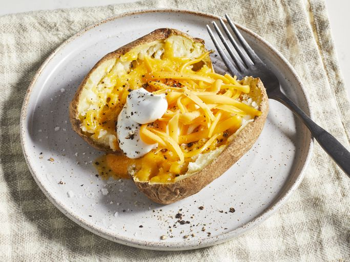

Home
Microwave Baked Potato Recipe

When you're short on time or patience, waiting an hour or more for an oven-baked potato might seem like a tall order. That's why this recipe is so darn good – you can have a perfectly microwaved baked potato in just a little more than 10 minutes!
Ingredients
- 1 large russet potato
- salt and ground black pepper to taste
- 1 tablespoon butter
- 2 tablespoons shredded Cheddar cheese
- 1 tablespoon sour cream
Steps
- Gather all ingredients.
- Scrub potato and prick with a fork. Place on a microwave-safe plate. Microwave on full power for 5 minutes. Turn potato over, and microwave until soft, about 5 more minutes.
- Remove potato from the microwave, and cut in half lengthwise. Season with salt and pepper and mash up the inside a little with a fork.
- Add butter and Cheddar cheese. Microwave until melted, about 1 more minute.
- Top with sour cream, and serve.